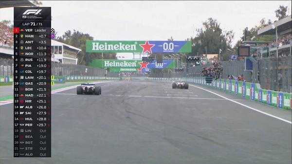
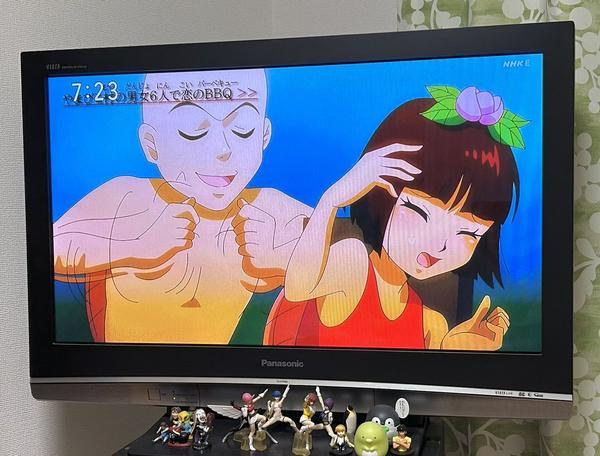
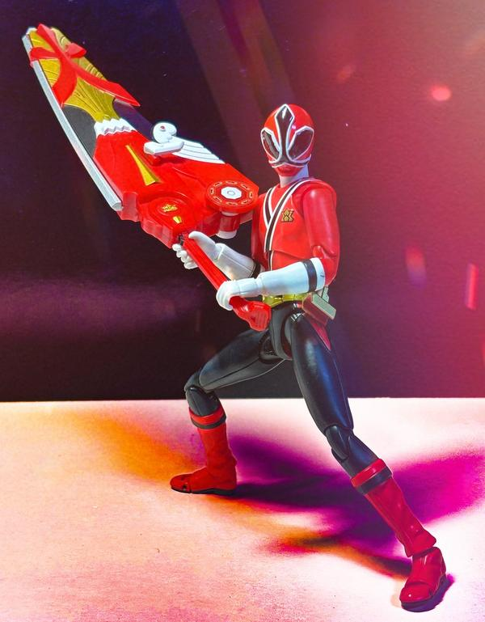
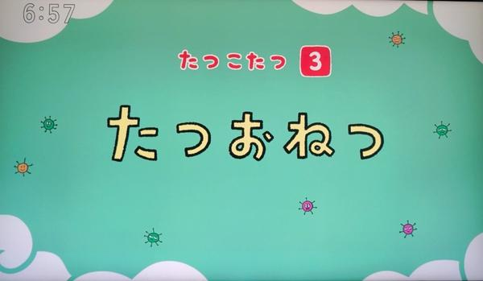

🇯🇵 日本の主要ニュース
災害対策の司令塔「防災庁」が発足事前防災から発災後の対応、復旧・復興までを一貫して担う「防災庁」が2日に発足しました。政府は防災体制を抜本的に強化するとしています。
出典：NHK
GMO不正アクセス問題、きょう熊谷社長が会見GMOインターネットグループのサービスが不正アクセスを受けた問題で、熊谷正寿社長らが2日に記者会見します。2年前に脆弱性を指摘された後の対応や、被害拡大の防止策をどう説明するかが焦点です。
出典：NHK
ゆうちょ銀行の貯金上限撤廃、議論進むゆうちょ銀行は利子がつく貯金の上限（1300万円）の撤廃を郵政民営化委員会に求めています。金融機関の団体からは競争が激しくなるとして懸念の声も出ています。
出典：NHK
🌍 世界の主要ニュース
🤖 AIニュース
Claude、既存ゲームの“再現”を作らないよう変更AIで有名ゲームを再現したファン作品が相次ぐ中、Anthropicは他社ゲームの複製は知的財産の侵害にあたるとして、Claudeが応じないように変更しました。オリジナルやジャンルものの開発は引き続き可能です。
出典：Engadget
💻 PC・ガジェットニュース
🔥 Xのトレンド（日本）
ジャンルで絞らず上位20件を掲載。「未確認」はX上の投稿だけを根拠にしたもので、報道機関による裏付けはありません。
F1メキシコシティGPで、メルセデスのキミ・アントネッリ（20歳）が3位に入り、2026年のワールドチャンピオンが決定。20歳68日での戴冠はF1史上最年少で、イタリア人の王者は1953年のアスカリ以来73年ぶりです。
出典：autosport web（Google ニュース経由）

メキシコシティGP決勝の実況タグ。フェルスタッペンが優勝、ハミルトン2位、アントネッリ3位。赤旗やペナルティが相次ぐ荒れたレースで、デビュー戦の平川亮（ハース）は13位で完走しました。
出典：autosport web など
マクドナルドが2日から12日間、ポテトのM・Lを250円にするキャンペーンを開始。公式アカウントへのこのタグ付きリプライでマックカードが当たる企画に応募が殺到しています。
出典：マクドナルド公式X／LASISA
朝日放送の「おはよう朝日です」の実況タグ。Aぇ! groupのメンバー出演回で、コーナー内の食リポや「ウマンタ」などのシーンにファンの感想が集まっています。
⚠ 未確認（X情報のみ）

Eテレのアニメ「はなかっぱ」2日朝の放送が、恋愛リアリティーショーのパロディー回だったとして話題に。等身の高いキャラクターの絵柄に「どうした」「神回」と驚く声が相次いでいます。
⚠ 未確認（X情報のみ）
メキシコシティGPのスタート直後、フェラーリのルクレールがハミルトンとの争いでコース外から抜いたとして5秒ペナルティ。首位をフェルスタッペンに明け渡す形になり、その判断や走りをめぐって議論が起きています。
⚠ 未確認（X情報のみ）
11月2日は「タイツの日」とされ、タイツをテーマにしたイラストや写真、フィギュアの投稿が多数上がっています。
⚠ 未確認（X情報のみ）
GU×「ちいかわ」冬コラボ（11月20日・27日発売予定）のオンライン先行予約が2日朝7時15分に始まり、アクセスが集中。「買えた」「売り切れた」という報告が相次いでいます。
出典：朝日新聞（Yahoo!ニュース）
ACEesの浮所飛貴さんが、富士フイルムビジネスイノベーションのマルチコピー機の新CMで初の単独CM出演。発表を受け、ファンから祝福の声が集まっています。
出典：日刊スポーツ（Google ニュース経由）
メキシコシティGPで5番グリッドから優勝し、今季3勝目。再スタートでのハミルトンとのバトルや接触の場面が拡散されています。
出典：dメニューニュース など

11月2日は「いい（11）もじ（2）」の語呂合わせで「書道の日」「習字の日」。作品やイラスト、戦隊ヒーロー「シンケンジャー」のフィギュア写真などが投稿されています。
⚠ 未確認（X情報のみ）
フェラーリ移籍後初のポールから決勝は2位。赤旗のタイミングで損をしたとの見方や、過去にも「初表彰台のレースで別の選手が王者に」という巡り合わせを指摘する投稿が出ています。
⚠ 未確認（X情報のみ）
光邦さんがパーソナリティーを務める朝のラジオ番組の実況タグ。2日はメールテーマ「部活あるある」や、日本一を逃したDeNAベイスターズの話題で盛り上がりました。
⚠ 未確認（X情報のみ）
朝のラジオ番組の実況タグ。クイズコーナー「モーニングIQ」で、出演者が少ないヒントから青山テルマ「そばにいるね」を言い当て、驚きの声が上がっています。
⚠ 未確認（X情報のみ）
メキシコシティGPで7位を走っていたレーシングブルズの新人リンドブラッドが、ピアストリと接触してクラッシュしセーフティーカーの原因に。「もったいない」との声が出ています。
⚠ 未確認（X情報のみ）
キャデラックのボッタスがメキシコシティGPでブレーキング時に突然フロントサスペンションが折れてクラッシュし、赤旗に。ドライバーにけがはなかったと伝えられています。
⚠ 未確認（X情報のみ）
GU×ちいかわコラボの中でも「うさぎ」のポーチが予約開始直後に売り切れとなり、「瞬殺」「買えなかった」と嘆く投稿が多数出ています。
⚠ 未確認（X情報のみ）
「ちいかわGU」と同じ冬コラボの話題。雪の日をテーマにしたおでかけ着やルームウェア、ポーチなどのラインナップや購入報告が投稿されています。
⚠ 未確認（X情報のみ）
アントネッリが20歳68日で王座を決め、ベッテルの持っていたF1最年少王者記録を3年以上更新。参戦2年目での戴冠を祝う投稿が広がっています。
出典：スポニチアネックス（Google ニュース経由）

Eテレ「0655」の歌「たつこたつ」シリーズ第3弾として、絵本にもなっている「たつおねつ」が2日朝に放送され、「やっぱりたつおねつだった」と喜ぶ声が上がっています。
⚠ 未確認（X情報のみ）
Grok Bot がまとめました。